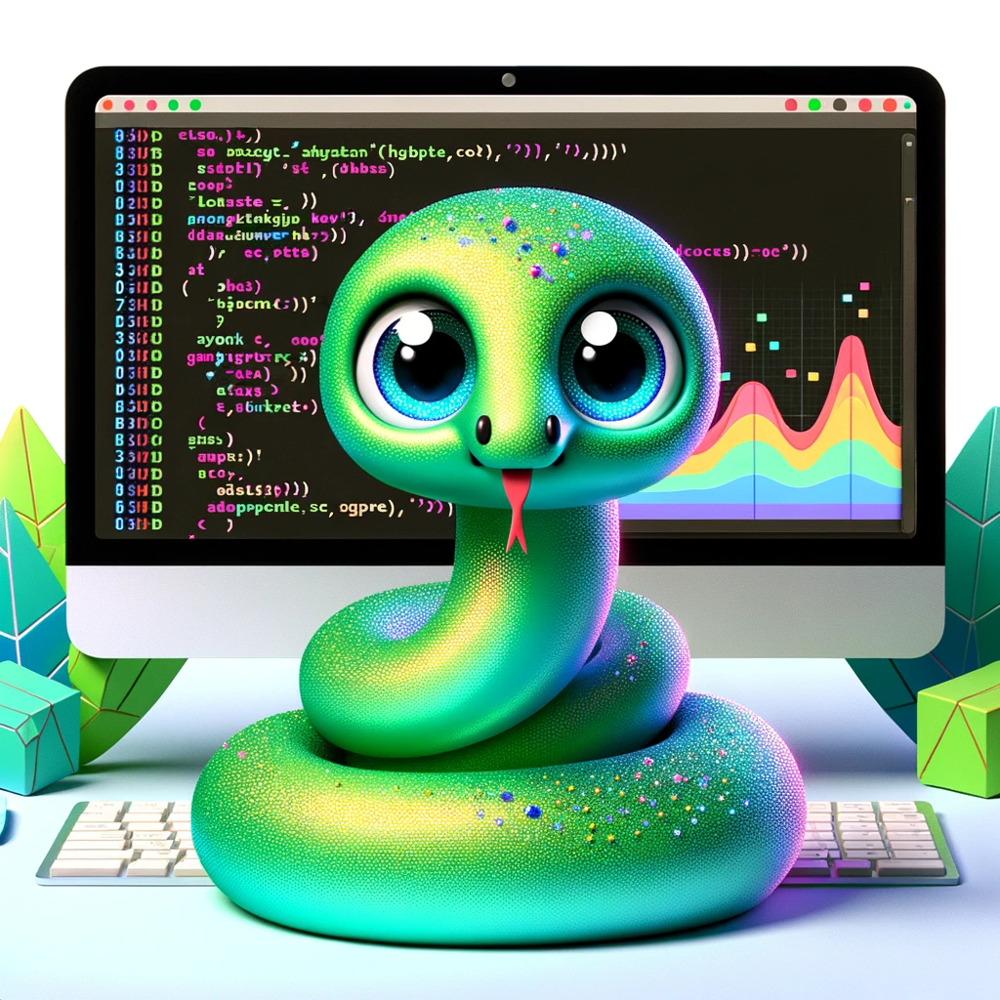

Learning to code is anything but a walk in the park.
Let’s be honest: it’s hard, especially if you’re just starting out.
Almost every guide out there recommends Python as the best starting point, but is this really the one-size-fits-all solution that it’s made out to be?
In this article, we’ll turn conventional wisdom on its head and look at some unconventional ways to approach programming, particularly focusing on Python and the Data Analyst pathway.

Why Do So Many People Consider Python the Best Programming Language?
Python’s rise to prominence has been nothing short of meteoric.
Its clean syntax and diverse libraries make it appealing for beginners.
But let’s challenge the status quo for a moment: is Python always the best choice?
Sure, it’s a Swiss Army knife of programming, good for tasks ranging from data analysis to web development. But other languages excel in specific domains too.
- For instance, if statistical analysis is your forte, R might be a better fit.
- Languages like SQL are indispensable for database management.
- And if you’re keen on low-level programming, something like C or Rust could be more up your alley.
So before getting swayed by Python’s allure, think hard about what you really want to achieve.
Focus on a Concrete Problem First, Not the Language
Traditionally, you choose a language and then learn it by tackling simple exercises.
But what if we turned the table?
What if, instead of choosing a language first, you pick a specific problem to solve?
Let’s say you’re fascinated by predictive analytics.
Why not start with a free tutorial on how to do forecasting analysis using R?
Once you solve a real-world problem, you’ll feel more accomplished and motivated.
Additionally, this approach tailors your learning to your career objectives.
Imagine you’re eyeing a Data Analyst role that needs proficiency in SQL; wouldn’t it be more effective to start with SQL-specific tasks?
This approach doesn’t just make learning more interesting; it makes it directly relevant.
Learning by Doing vs. Learning from an Introductory Course
Often, the go-to recommendation for aspiring coders is to enroll in an introductory course.
While that’s not necessarily a bad idea, it’s not the best fit for everyone.
Introductory courses give you a well-rounded foundation but might lack focus on what you need.
Moreover, the practical application often takes a backseat to theoretical learning. Instead, consider a more hands-on approach.
Take up mini-projects or challenges that directly tie into your interests or potential job roles. Not only does this make learning more exciting, but it also helps you build a portfolio. This is particularly crucial for roles like Data Analyst where your skills need to be demonstrable, not just theoretical.
Coding Frustration is Normal, But There are Ways to Overcome It
Hitting a roadblock while learning to code is inevitable. And the conventional advice is usually along the lines of “keep pushing through.”
But what if that’s actually counterproductive?
What if pushing through only adds to the frustration?
A less conventional approach is to step back.
Detach yourself from the problem and do something entirely different. Read a book, take a walk, or even delve into a different coding challenge.
Your subconscious will continue to work on the problem in the background. When you return, you’ll often find that you’re able to see the issue from a new angle, making it easier to solve.
Conclusion
The path to becoming a competent coder isn’t straightforward or easy.
If you’re considering learning Python or eyeing a Data Analyst role, remember that there are alternative ways to achieve your goal.
The traditional path isn’t always the most effective or the most fulfilling.
By being open to unconventional learning methods, you can not only make the journey more interesting but also directly relevant to your career aspirations.
Why is coding so hard?
Coding itself is not hard. What's hard is finding solutions to hard problems. When those are problems can be handled with code, then the code will surely be hard. But the concepts beneath that solution, the fundamental ideas, are always the same and kind of simple. The difficult thing is relating all the concepts you learn about programming so that, alltogether, can solve hard problems.
How difficult is coding?
Learning the basic concepts about programming are not so difficult. The difficult thing is relating them so that, together, can handle difficult situations. The way of learning this is tackling at first simple problems, situations that lots of people have already solved, like Kaggle problems. Those simple situations will teach you how to apply specific coding tools. Then you will tackle more complex situations, but which require in the end the same concepts you've already applied to simple ones.
Is coding harder than math?
Coding and math have something in common, which is the abstract way of thinking. When you code or study math, you don't really work with specific objects, but with general elements that can represent very different situations. That is the common and difficult part of both areas. The easy thing about coding, which is different in maths, is that you will always apply your idea, whereas in maths you might not apply your idea to anything specific. The consequence is that maths is always abstract, but coding solutions will eventually become a real situation. That make them easier to understand that maths'.
Is coding a stressful job?
Coding is similar to puzzles. So, if puzzles stress you up, then yes. But in general terms, a problem with coding are deadlines. I mean, if you're working at a badly managed projects, always with tight schedules, then it can be stressful. But the general environment consists on you and the computer, avoiding distractions. It doesn't have to be stressful.